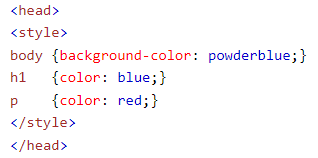
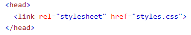
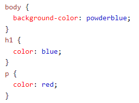

Atributo style
¿Para que se utiliza style?
El atributo global de estilo contiene declaraciones de estilo CSS que se aplicarán al elemento. Tenga en cuenta que se recomienda que los estilos se definan en un archivo o archivos separados. Este atributo y el elemento style tienen principalmente el propósito de permitir un estilo rápido, por ejemplo, con fines de prueba.
Ejemplo dentro de un elemento
<h1 style="color:blue;text-align:center;">This is a header</h1>
<p style="color:green;">This is a paragraph.</p>
Utilizar este código da el siguiente resultado:
Esto es un encabezado
Esto es un párrafo.
Implementación del atributo style
Existen tres formas distintas de utilizar el atributo style:
- En línea: mediante el uso del atributo de estilo dentro de los elementos HTML.
- Interno: mediante el uso de un elemento <style> en la sección <head>.
- Externo: mediante el uso de un elemento <link> para vincular a un archivo CSS externo.
La forma más común de agregar CSS es mantener los estilos en archivos CSS externos.
CSS En línea
Se utiliza un CSS en línea para aplicar un estilo único a un único elemento HTML. Un CSS en línea usa el atributo de estilo de un elemento HTML.
El ejemplo anterior donde se modifica el color del encabezado y el párrafo son ejemplos de CSS en línea.
<h1 style="color:blue;text-align:center;">This is a header</h1>
<p style="color:green;">This is a paragraph.</p>
CSS Interno
Se utiliza un CSS interno para definir un estilo para una sola página HTML.
Un CSS interno se define en la sección <head> de una página HTML, dentro de un elemento <style>.
Ejemplo

CSS Externo
Se utiliza una hoja de estilo externa para definir el estilo de muchas páginas HTML.
Para usar una hoja de estilo externa, es necesario agregar un enlace en la sección <head> de cada página HTML:
Ejemplo

La hoja de estilo externa se puede escribir en cualquier editor de texto. El archivo no debe contener ningún código HTML y debe guardarse con una extensión .css.

Bordes
La propiedad de borde crea un borde alrededor de un elemento HTML.
Ejemplo
p {
border: 2px solid powderblue;
}
El código previo se miraria de la siguiente forma:
Texto de ejemplo
Relleno
La propiedad de relleno CSS define un relleno (espacio) entre el texto y el borde.
Ejemplo
p {
border: 2px solid powderblue;
padding: 30px;
}
El código previo se miraria de la siguiente forma:
Texto de ejemplo
Margen
La propiedad de margen CSS define un margen (espacio) fuera del borde.
Ejemplo
p {
border: 2px solid powderblue;
margin: 50px;
}
El código previo se miraria de la siguiente forma:
Texto de ejemplo
Texto de ejemplo